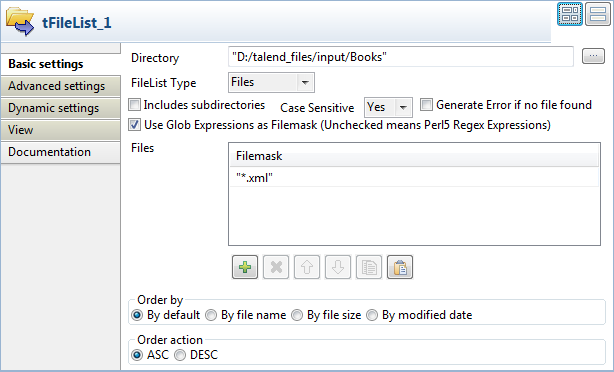
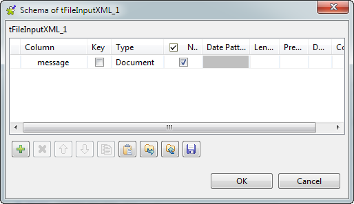
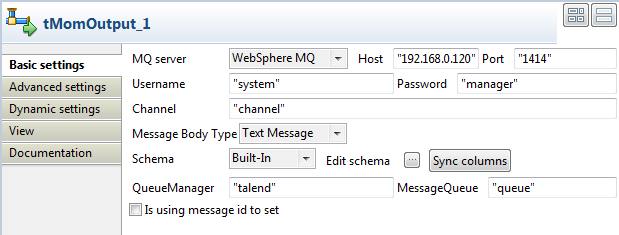
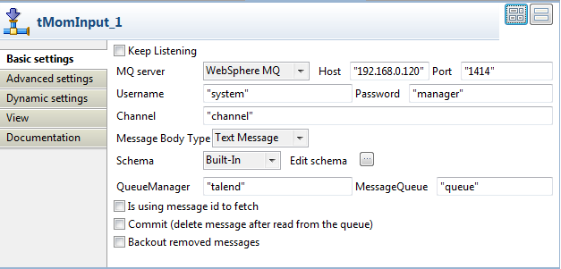
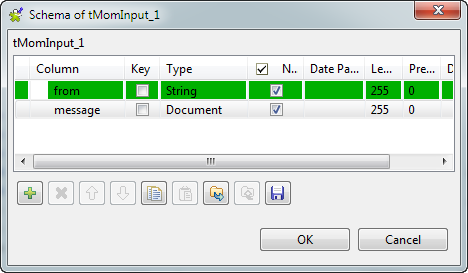
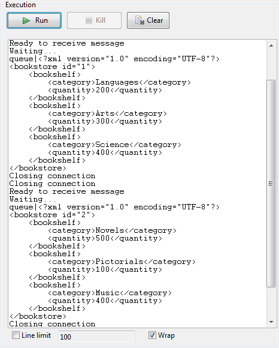

|
Famille de composant |
Internet | |
|
Fonction |
Ce composant récupère un message d’une file d’attente d’un système Middleware orienté Message et le passe au composant suivant. | |
|
Objectif |
Le tMomInput permet de mettre en place des communications asynchrones via un serveur MOM. | |
|
Basic settings |
Use existing connection |
Cochez cette case et sélectionnez le composant de connexion adéquat à partir de la liste Component list pour réutiliser les paramètres d’une connexion que vous avez déjà définie. NoteLorsqu’un Job contient un Job parent et un Job enfant, la liste Component list présente uniquement les composants de connexion du Job du même niveau. |
| Keep Listening |
Cochez cette case pour consulter en continu le serveur MOM pour récupérer les nouveaux messages. - Si vous sélectionnez le serveur JBoss Messaging, cocher cette case fera apparaître le champ Sleeping time (in sec). - Si vous sélectionnez le serveur ActiveMQ, cocher cette case fera disparaître le champ Sleeping time (in sec). | |
|
|
Sleeping time (in sec) |
Saisissez en secondes la fréquence de variation. Ce champ est disponible si vous sélectionnez ActiveMQ ou JBoss Messaging dans la liste MQ Server. |
|
|
MQ Server |
Sélectionnez dans cette liste le serveur MOM à utiliser. Les paramètres requis diffèrent légèrement en fonction du serveur sélectionné. |
|
|
Host/Port |
Renseignez le nom de l’hôte (Host) et l’adresse IP du serveur MOM ainsi que le Port. |
|
|
Username |
Identifiant de connexion au serveur MQ. |
|
|
Password |
Mot de passe de connexion au serveur MQ. |
|
|
Message From |
Saisissez la source du message, telle qu’attendue par le serveur. Celle-ci peut être composé du type et du nom de la source, par exemple : queue/A ou topic/testtopic. Notez que ce champ est sensible à la casse. Ce champ est disponible si vous sélectionnez ActiveMQ ou JBoss Messaging dans la liste MQ Server. |
|
|
Message Type |
Sélectionnez le type de message : topic ou queue. Ce champ est disponible si vous sélectionnez ActiveMQ ou JBoss Messaging dans la liste MQ Server. |
|
|
Message Body Type |
Sélectionnez le type de message : Text, Bytes ou Map. |
|
|
Schema et Edit Schema |
Un schéma est une description de lignes, i.e., il définit le nombre de champs qui sont traités et passés au composant suivant. Le schéma du composant tMomInput est composé de deux colonnes : From et Message, dont le nom est en lecture seule. |
| Websphere MQ |
Channel |
Renseignez ce champ avec le nom du canal avec lequel la connexion est établie. La valeur par défaut est DC.SVRCONN. |
|
|
Queue Manager |
Programme système fournissant un conteneur logique pour la file de messages et responsable de transférer les données à d'autres gestionnaires de file via des canaux de messages. Renseignez ce champ avec le nom du gestionnaire de file(s) d’attente auquel la connexion est effectuée. |
|
|
Message Queue |
File d’attente à partir de laquelle les applications de files d'attente de messages peuvent charger des messages et en récupérer. Renseignez ce champ avec le nom de la file de messages. |
|
|
Is using message id to fetch |
Cochez cette case pour appliquer un filtre portant sur les messages id, filtre que vous déterminerez dans le champ Message id. |
|
|
Commit (delete message after reading from the queue) |
Cochez cette case afin de forcer le commit après lecture de chaque message dans la file d’attente. |
| Backout removed messages |
Cochez cette case pour indiquer au gestionnaire de file que tous les messages lus depuis le serveur ne seront pas supprimés lorsque la connexion au serveur sera suspendue. NoteCette case ainsi que la case Browse message dans la vue Advanced settings vous permettent de lire des messages de manière non destructive dans la file. Elle n'est visible que lorsque la case Keep listening est décochée. Pour plus d'informations, consultez le Guide MQSeries Using Java (en anglais). | |
| ActiveMQ |
Receive number of messages |
Cochez cette case afin de limiter le nombre de messages à recevoir dans la console. AvertissementLorsque vous choisissez de limiter le nombre de messages à recevoir, la limite de temps devient inactive, les champs Keep listening/Sleeping time (in sec) disparaissent. |
| Failover |
Cochez cette case pour afficher la table d'adresses du serveur. Dans cette table, vous pouvez définir plusieurs serveurs MQ pour le failover. | |
| Advanced settings | Get Jms Header |
Cochez cette case pour recevoir les en-têtes JMS via le mapping des champs JMS vers les champs MQ Series sur le serveur MQ. Lorsque cette case est cochée, vous pouvez spécifier le nom de l'en-tête JMS ainsi que le nom de la colonne de référence correspondante dans la (les) ligne(s) ajoutée(s) en cliquant sur le bouton [+] sous la table Parameters. Pour plus d'informations concernant l'utilisation des en-têtes JMS, consultez le Chapitre 12 de MQSeries Using Java (en anglais). Ce champ est disponible si vous sélectionnez ActiveMQ ou JBoss Messaging dans la liste MQ Server. |
| Get Jms Properties |
Cochez cette case pour recevoir les propriétés JMS mappées dans les champs MQMD. Lorsque cette case est cochée, vous pouvez spécifier le nom, le type et le nom de la colonne de référence dans la (les) ligne(s) ajoutée(s) en cliquant sur le bouton [+] sous la table Parameters. Pour plus d'informations concernant l'utilisation des propriétés JMS, consultez le Chapitre 12 de MQSeries Using Java. Ce champ est disponible si vous sélectionnez ActiveMQ ou JBoss Messaging dans la liste MQ Server. | |
| Browse message |
Cochez cette case afin de désactiver les options Commit (delete message after reading from the queue) et Backout removed messages dans la vue Basic settings et d'ouvrir la file pour parcourir les messages. NoteCette case ainsi que la case Backout removed messages dans la vue Basic settings vous permettent de lire des messages de manière non destructive dans la file. La case Browse message est visible uniquement lorsque la case Backout removed messages est décochée. Pour plus d'informations, consultez MQC: MQOO_BROWSE (en anglais). | |
| Get MQMD Fields | Cochez cette case pour définir un ou plusieurs Message Descriptor(s) en ajoutant de nouveaux champs pour MQMD (Message queuing message descriptor) dans le tableau Parameter : Field Name : sélectionnez un ou plusieurs descripteur(s) de messages dans la liste afin de récupérer les informations de l'en-tête du message. Reference Column Name : Informations d'en-tête et propriétés du message. Pour plus d'informations, consultez Fields for MQMD (en anglais). Ce champ est disponible si vous sélectionnez ActiveMQ ou JBoss Messaging dans la liste MQ Server. | |
| Include Header |
Cochez cette case pour activer la case suivante : MQRFH2 fixed Portion : Cochez cette case et cliquez sur le bouton [+] pour ajouter une ou plusieurs ligne(s) pour spécifier le nom du champ et sa valeur pour la portion fixe de l'en-tête MQRFH2. et les cases pour les portions variables contenant les trois dossiers suivants : MCD folder : Cochez cette case et cliquez sur le bouton [+] pour ajouter une ou plusieurs ligne(s) pour spécifier le nom et la valeur des propriétés décrivant le format du message. JMS folder : Cochez cette case et cliquez sur le bouton [+] pour ajouter une ou plusieurs ligne(s) pour spécifier le nom du champ et sa valeur pour le transport des champs d'en-têtes JMS et des propriétés JMSX. USR folder : Cochez cette case et cliquez sur le bouton [+] pour ajouter une ou plusieurs ligne(s) pour spécifier le nom du champ et sa valeur pour le transport des propriétés définies par l'application associée au message. Pour plus d'informations concernant les en-têtes MQRFH2, consultez le Chapitre 12 de MQSeries Using Java. Ce champ est disponible si vous sélectionnez ActiveMQ ou JBoss Messaging dans la liste MQ Server. | |
| Set CipherSpec |
Cochez cette case pour activer la liste CipherSpec dans laquelle vous pouvez spécifier le CipherSpec à utiliser avec le SSL WebSphere. Pour plus d'informations concernant CipherSpec, consultez Specifying CipherSpecs (en anglais). Ce champ est disponible si vous sélectionnez ActiveMQ ou JBoss Messaging dans la liste MQ Server. | |
|
|
tStatCatcher Statistics |
Cochez cette case pour collecter les données de log au niveau du composant. |
|
Dynamic settings |
Cliquez sur le bouton [+] pour ajouter une ligne à la table. Dans le champ Code, saisissez une variable de contexte afin de sélectionner dynamiquement votre connexion au serveur MQ parmi celles prévues dans votre Job. La table Dynamic settings n'est disponible que si la case Use an existing connection est cochée dans la vue Basic settings. Lorsqu'un paramètre dynamique est configuré, la liste Component List devient inaccessible dans la vue Basic settings. Pour plus d'informations concernant les Dynamic settings et les variables de contexte, consultez le Guide utilisateur Talend Open Studio. | |
|
Utilisation |
Ce composant est généralement utilisé en tant que composant de début. Il requiert un composant de sortie. | |
|
Limitation |
Assurez-vous que le serveur Websphere, JBoss ou ActiveMQ correspondant est lancé. | |
Ce scénario est composé de deux Jobs. Le premier permet de poster des messages sur la file d’attente du serveur JBoss et le deuxième récupère les messages de ce serveur.
Dans le premier Job, un message composé de chaînes de caractères est créé à l’aide du composant tRowGenerator puis transmis au serveur JBoss à l’aide du composant tMomOutput. Un composant intermédiaire, le composant tLogRow, permet d’afficher le flux transmis.

Cliquez et déposez ces trois composants dans votre premier Job et connectez-les via le clic-droit avec des liens de type Main > Row.
Double-cliquez sur le composant tRowGenerator pour configurer le schéma des données qui seront générées de manière aléatoire.

Créez une seule colonne appelée message. Elle correspond au message qui sera mis sur la file d’attente du MOM.
Cette colonne est de type String et peut contenir une valeur nulle. Pour produire les données, utilisez une fonction prédéfinie permettant de concaténer de manière aléatoire les caractères ascii choisis pour former la chaîne de 6 caractères. Cette fonction est la suivante :
getAsciiRandomString. (version Java). Cliquez sur le bouton d’aperçu pour afficher un échantillon au hasard des données générées.Paramétrez le champ Number of rows to be generated permettant de définir le nombre de lignes générée à 10.
Cliquez sur OK pour valider.
Le composant tLogRow est uniquement utilisé pour afficher un état intermédiaire des données manipulées. Dans cet exemple, aucune configuration spécifique n’est nécessaire.
Sélectionnez le composant tMomOutput.

Dans cet exemple, le serveur MQ server à utiliser est de type JBoss.
Dans les champs Host et Port, renseignez les informations de connexion correspondantes.
Sélectionnez le type de message dans la liste déroulante Message type, il peut être de type Queue ou Topic. Pour cet exemple, sélectionnez le type Queue dans la liste.
Dans le champ To, saisissez les informations source du message strictement telles qu’elles sont attendues par le serveur. Il doit correspondre au type de message que vous avez sélectionné dans la liste déroulante Message Type, notamment :
queue/A.Note
Le nom du message est sensible à la casse, ainsi
queue/AetQueue/Asont différents.Puis cliquez sur Sync Columns pour récupérer le schéma du composant précédent. Le schéma étant en lecture seule, il ne peut être modifié. Les données envoyées sur le serveur MQ proviennent de la première colonne rencontrée du schéma.
Exécutez le Job en appuyant sur F6 et, grâce au composant tLogRow, observez dans la console le flux de données transmis.

Puis paramétrez le deuxième Job pour récupérer les messages de la file d’attente du serveur MOM.

Cliquez et déposez un composant tMomInput (dans la famille Internet de la Palette) et un composant tLogRow pour afficher les messages récupérés.
Sélectionnez le tMomInput et définissez ses paramètres.

Sélectionnez le serveur MQ server dans la liste. Dans cet exemple, un serveur de message JBoss est utilisé.
Renseignez les informations Host et Port du serveur.
Renseignez les paramètres des champs Message From et Message Type afin qu’ils correspondent à la source et au type de message attendus par le serveur de message.
Le schéma dans le champ Schema est en lecture seule et est composé de deux colonnes : From et Message.
Cochez la case Keep listening et paramétrez la fréquence de vérification à 5 secondes.
Note
Lorsque vous utilisez l’option Keep Listening, vous devez cliquez sur le bouton Kill pour stopper le Job.
Laissez les paramètres par défaut du composant tLogRow.
Enregistrez le Job et exécutez-le (si vous le lancez pour la première fois ou si vous l’avez stoppé au cours d’un lancement précédent).

Les messages récupérés sur le serveur sont affichés dans la console.
Ce scénario décrit un Job à cinq composants, comprenant deux sous-jobs envoyant des fichiers XML depuis un dossier local vers une file MOM puis récupérant les fichiers de la file MOM et affichant le contenu des fichiers dans la console.

De la Palette, déposez les composants suivants dans l'espace de modélisation graphique : un tFileList, un tFileInputXML, un tMomOutput, un tMomInput et un tLogRow.
Reliez le tFileList au tFileInputXML à l'aide d'un lien Row > Iterate et reliez le tFileInputXML au tMomOutput à l'aide d'un lien Row > Main afin de former le premier sous-job. Ce sous-job lit chaque fichier XML dans un dossier donné et l'envoie dans une file MOM.
Connectez le tMomInput au tLogRow à l'aide d'un lien Row > Main pour former le second sous-job. Ce sous-job récupère les fichiers XML de la file MOM et affiche leur contenu dans la console.
Reliez le tFileInputXML au tMomInput à l'aide d'un lien Trigger > On Component Ok afin de relier les deux sous-jobs.
Double-cliquez sur le tFileList pour ouvrir sa vue Basic settings.
Dans le champ Directory, saisissez le chemin d'accès au répertoire duquel lire les fichiers XML, ou parcourez votre système en cliquant sur le bouton [...].
Cochez la case Use Glob Expressions as Filemask, ajoutez une nouvelle ligne dans la table Files en cliquant sur le bouton [+] et saisissez
"*.xml"comme masque de fichier, dans la colonne Filemask, afin d'utiliser tous les fichiers XML du répertoire. Laissez les autres paramètres tels qu'ils sont.Double-cliquez sur le composant tFileInputXML pour ouvrir sa vue Basic settings.

Cliquez sur le bouton [...] à côté du champ Edit schema pour ouvrir la boîte de dialogue [Schema].
Cliquez sur le bouton [+] pour ajouter une colonne, nommez-la message dans cet exemple et sélectionnez Document dans la liste Type afin de gérer les fichiers au format XML. Cliquez sur OK pour fermer la boîte de dialogue.
Dans le champ File name/Stream, appuyez sur les touches Ctrl+Espace pour accéder à la liste des variables globales et sélectionnez
tFileList_1.CURRENT_FILEPATHafin d'effectuer une boucle sur le répertoire des fichiers de contexte.Dans le champ Loop XPath query, saisissez
“/”pour définir la racine comme nœud de boucle dans la structure des fichiers d'entrée. Dans la table Mapping, dans la colonne XPath query, saisissez“.”pour extraire toutes les données du nœud de contexte des fichiers source et cochez la case Get Nodes afin de construire un flux de données de type Document.
Double-cliquez sur le composant tMomOutput pour ouvrir sa vue Basic settings.
Sélectionnez WebSphere MQ dans la liste MQ server et saisissez le nom de l'hôte ou l'adresse IP du serveur MQ, ainsi que le numéro du port.
Saisissez les informations d'authentification dans les champs Username (identifiant) et Password (mot de passe) puis saisissez le nom du canal de la file de transmission, dans le champ Channel.
Comme vous gérez des messages de fichiers, sélectionnez Text Message dans la liste Message Body Type.
Cliquez sur Sync columns afin de récupérer la structure du schéma du composant précédent.
Renseignez les informations relatives au gestionnaire de file, dans le champ QueueManager et les informations concernant la file de messages, dans le champ MessageQueue. Laissez les autres paramètres tels qu'ils sont.
Double-cliquez sur le tMomInput pour ouvrir sa vue Basic settings.
Configurez les paramètres simples du composant de la même manière que pour le tMomOutput, y compris les informations du serveur MQ, les informations d'authentification, le canal, le type de message, le gestionnaire de file et la file de messages.
Cliquez sur le bouton [...] à côté du champ Edit schema pour ouvrir la boîte de dialogue [Schema].
Dans la liste Type de la colonne message, sélectionnez Document afin de gérer les formats XML puis cliquez sur OK pour fermer la boîte de dialogue.
Appuyez sur les touches Ctrl+S afin de sauvegarder votre Job.
Appuyez sur F6 ou cliquez sur Run dans l'onglet Run pour exécuter le Job.
Les fichiers XML du dossier spécifié sont écrits dans la file de messages puis sont récupérés de la file. Le contenu des fichiers est affiché dans la console.
